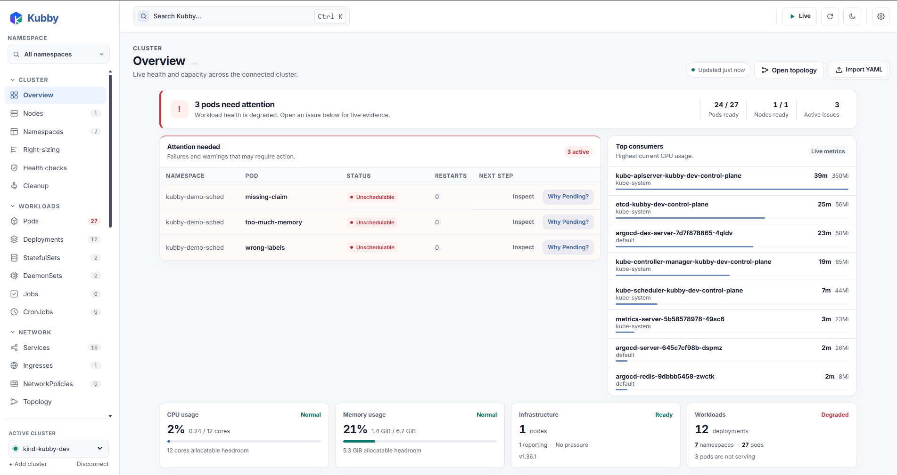

Spot what changed
An issue-first overview points to unhealthy Pods and the next useful question.
Personal Kubernetes workbench
See the evidence, find the cause, and make safer changes from one desktop app.
Runs locally. Uses your kubeconfig. No in-cluster agent.

See health, resources, and capacity in one focused view.
Follow the evidence behind a failing workload.
Take guided action with explicit confirmation.
A better troubleshooting loop
Kubby brings the objects, events, logs, and next steps together so you can work through an incident deliberately.
An issue-first overview points to unhealthy Pods and the next useful question.
Incident Studio connects events, logs, ownership, and service readiness in one report.
Preview supported changes, confirm writes, and watch the resource recover.
Built for the real work
A desktop workspace for exploring your cluster, understanding failures, and acting on them.
Investigate a failing resource through ranked findings, a timeline, and related objects. Ask AI with a preview of exactly what gets sent when you want another perspective.
Explore the capabilitiesBrowse built-in and discovered custom resources, inspect YAML and events, and follow relationships without memorizing commands.
Trace routes from Ingress or Istio Gateway through Services to their Pods, with broken hops called out.
Find broken admission webhooks, expiring certificates, and deletions stuck behind finalizers.
Follow logs, open a Pod terminal, forward a port, and manage Helm releases in the same workspace.
Get started
Bring an existing kubeconfig. Kubby runs on your machine and talks directly to your cluster.
Windows x86-64 preview available · Linux build instructions available · macOS support in progress